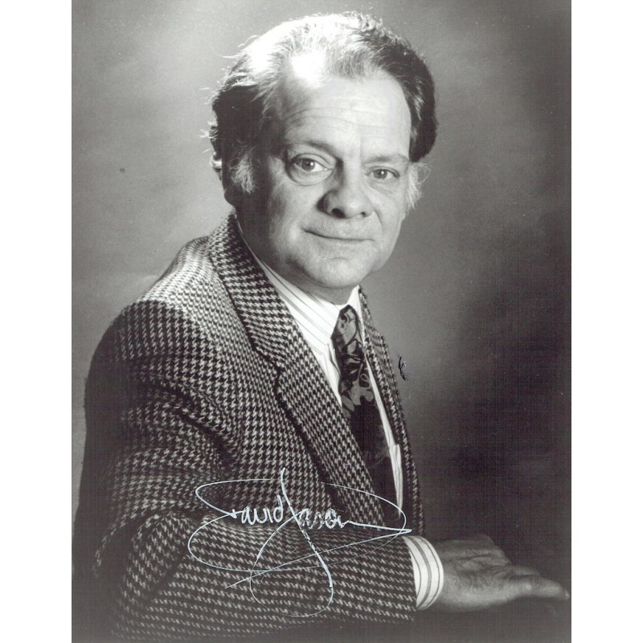
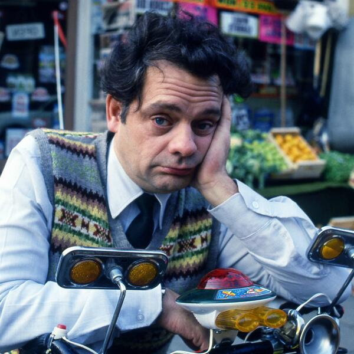

Here is a timeline of Sir David Jasons life
- 1940 - Born Edmonton, Middlesex, England.
- 1964 - Started his television career playing the part of Bert Bradshaw in Crossroads.
- 1977 - Married Myfanwy Talog.
- 1980 - Jason developed an association with Cosgrove Hall, and was a voice artist for a number of children's television productions. This included voices for Danger Mouse with Terry Scott, The BFG, Count Duckula, Hugo from Victor and Hugo, Mr. Mert from Truckers, and Toad from The Wind in the Willows, all produced by Cosgrove Hall for Thames Television/ITV.
- 1981 - David Jason found his most popular role as Del Boy Trotter in the BBC comedy Only Fools and Horses.
- 1992 - Signed a deal at ITV to star as Detective Inspector Jack Frost in the long-running TV series A Touch of Frost.
- 1993 - David was made an Officer of the Order of the British Empire (OBE).
- 1995 - Myfanwy Talog sadly passed away with breast cancer. This experience inspired him to create his own charity, The David Jason Trust for terminally ill children.
- 2001 - David Jason became a father fo the first time at the age of 61, when his girlfriend Gill Hinchcliffe gave birth to a baby girl.
- 2005 - Married girlfriend Gill Hinchcliffe.
- 2006 - He was voted by the general public as Number 1 in ITV's poll of TV's Greatest Stars.
- 2013 - Released his autobiography called David Jason: My Life.
To find out more about this incredible man please head over to his Wikipedia entry